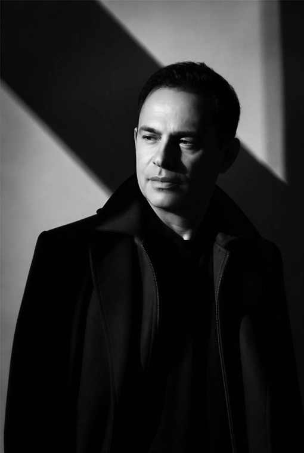

ISA TOTAH / ABOUT
About.

02 / THE PERSON BEHIND THE STORIES
A life in art.
A focus on hope.
Isa Totah is a writer-director whose films and screenplays explore conflict, relationships, and the search for meaning, always with an underlying optimism about people.
After more than thirty years working across stage, screen, and visual art, his focus is making films. His experience in acting and teaching, along with a sustained practice in painting and photography, informs the way he sees stories and the people who inhabit them.
He also speaks and consults on artistic careers and on the role of aesthetics and creativity in a life well lived. Whether on screen or in conversation, his work is rooted in the conviction that art can affirm the human spirit and make the world a little better.
Start a conversation ↗A FEW THOUGHTS
“The missing element is almost always the person themselves—their persistence, their focus, their willingness to keep going.”— Isa Totah
“Popular success is not the opposite of artistic integrity. Quitting is.”— Isa Totah
“Everyone is an artist.”— Isa Totah